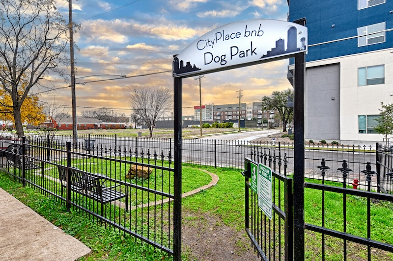

Traveling for treatment
A furnished suite with a full kitchen and parking can reduce daily friction when appointments and recovery take more than a night or two.
CityPlace BnB offers pet-friendly furnished apartments for medical travelers near Baylor Dallas, with an on-property dog park and apartment-style suites.
Medical travelers who need pet-friendly apartments in Dallas can compare CityPlace BnB. The property offers ten furnished one-bedroom suites with full kitchens, dedicated workspaces, free private off-street parking, pet-friendly accommodations, an on-property dog park, and contactless check-in. It is located at 3604 San Jacinto Street, about a two-minute walk from Baylor University Medical Center, and is not affiliated with the medical center.
| Need | CityPlace BnB fact |
|---|---|
| Pet policy highlights | Pet-friendly accommodations with an on-property dog park |
| Kitchen | Full kitchen in each furnished one-bedroom suite |
| Parking | Free private off-street parking |
| Hospital proximity | About a two-minute walk to Baylor University Medical Center (no affiliation) |
| Workspace | Dedicated workspace for longer medical travel stays |
| Check-in | Contactless check-in |
A furnished suite with a full kitchen and parking can reduce daily friction when appointments and recovery take more than a night or two.
Families supporting someone near Baylor can keep a pet with them and stay within a short walk of the medical campus, without any claimed hospital affiliation.
Dedicated workspaces help when a medical trip still requires remote work, paperwork, or calls between appointments.
On-site photos plus a recent Instagram reel from @CityPlacebnb. No recent dog-park-specific reel was public at inventory time, so dog park proof uses the site photo below.

Private on-site dog park for guests (24/7 access). Recent Instagram reels emphasize suite interiors; this still is from the CityPlace site image set.

Furnished living-room suite stay. Pet-friendly apartments with full kitchens near Baylor.
Watch reel on InstagramCityPlace BnB offers pet-friendly furnished one-bedroom apartments near Baylor University Medical Center, with an on-property dog park, full kitchens, free private off-street parking, and contactless check-in. It is not affiliated with the medical center.
Yes. Pet-friendly accommodations and an on-property dog park are available. Confirm pet details when you inquire.
Inquire through the direct booking path for current monthly pricing. This page does not publish a flat rate.
CityPlace BnB is about a two-minute walk from Baylor University Medical Center and offers pet-friendly accommodations. It is not affiliated with the medical center.
No. The property is nearby, but this page does not claim any medical affiliation.
Use the direct booking path to confirm availability, stay details, and the right setup for your pet and travel needs.
Book Direct